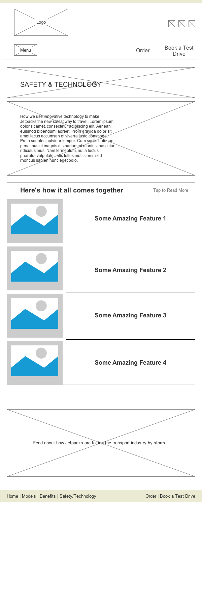
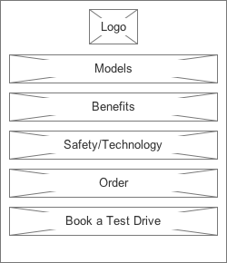

Landing page for Safety and Technology. Here's how it all comes together displays images of all the different safety features that will combine together to form the jetpack. The visitor can click on each feature one by one or skip to any feature they want to read. As a user reads the feature it will get moved to the left as seen in the next 2 steps.
Step 2
This shows what the page looks like after going through Feature 1.
Step 3
This shows what the page looks like after going through Feature 2.
Step 4
This shows what the page looks like after going through Feature 3.
Step 5
After going through all the features the visitor is reinforced that the product is safe because all these features work together to make up the jetpack.
Smartphone
Step 1
Landing page for Safety and Technology. Here's how it all comes together displays images of all the different safety features that will combine together to form the jetpack. The visitor can click on each feature one by one or skip to any feature they want to read. As a user reads the feature it will get moved to the left as seen in the next 2 steps.
Step 2

This shows the mobile menu opened which is required to navigate to this page.
Step 3
This shows the mobile menu closed.
Step 4
The main difference here is that features open up like an "Accordion". When a visitor clicks on a feature the content appears and pushes the rest of the page down.
Step 5
After going through all the features the visitor is reinforced that the product is safe because all these features work together to make up the jetpack.
Watch
Step 1
This shows the main page before the nav menu for the watch is opened.
Step 2

This shows the watch menu opened which is required to navigate to this page.
Step 3
Landing page for Safety and Technology. Safety features are displayed as a "carousel" type list that a user can swipe through.
Step 4
Tapping on that feature/image will go to a new page which gives information about that feature. Other features are listed immediately below for convenience to read more about it without having to go back.
Step 5
This mainly shows that the "Discover Another Safety Feature" section changes based on what feature you are currently on.Return to Top